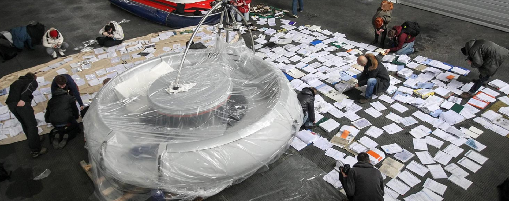
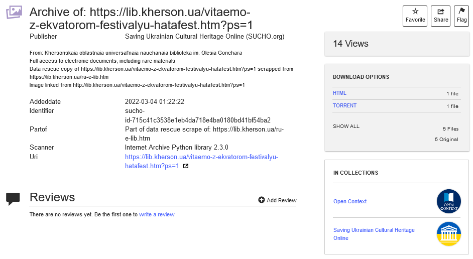
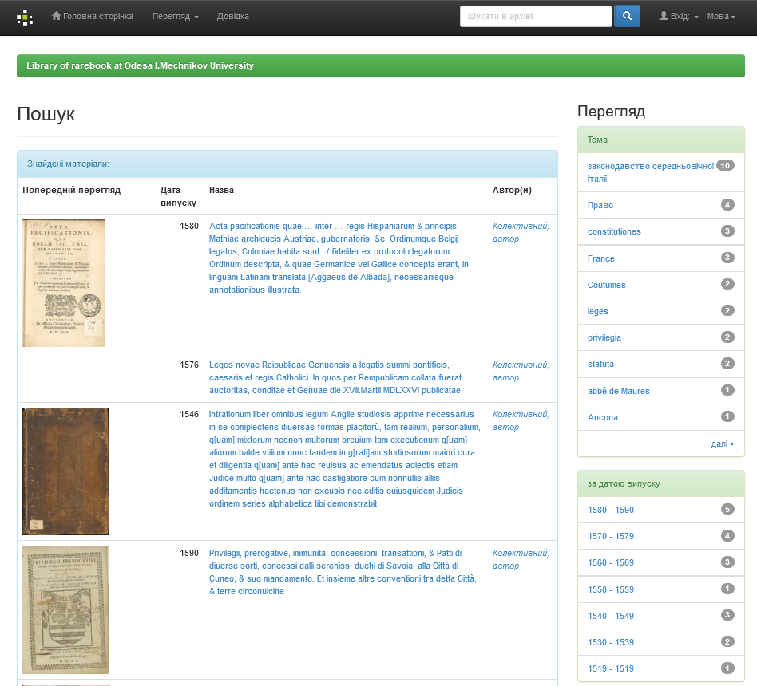
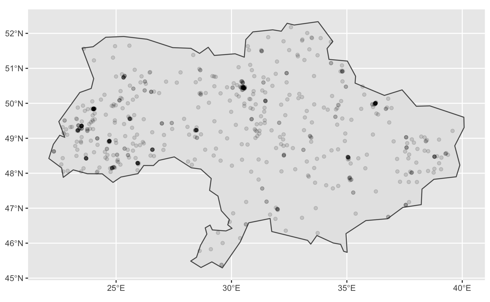

Andreas Segerberg
SUCHO is an initiative of over 1,500 international volunteers who are collaborating online to digitize and preserve Ukrainian cultural heritage. Since the start of the invasion, SUCHO has web-archived more than 5,000 websites and 50TB of data of Ukrainian cultural institutions, to prevent these websites from going offline. The websites range from national archives to local museums, from 3D tours of churches to children’s art centers.
But first...
How I got involved in archives and activism...
and a tiny bit of Foucault


Recorded war crimes
 https://culturecrimes.mkip.gov.ua/
https://culturecrimes.mkip.gov.ua/
Archiving mis- and desinformation


YanukovychLeaks
A project to restore destroyed documents by volunteers. The project started in March 2013 after journalists found five bin bags, stuffed with shredded papers, in the office of the former director of Mezhyhirya administration.
PHASE 1
Webarchiving
How to organize 1500 volunteers

Roles in SUCHO
There is tasks suitable for anyone regardless of technology savviness.
The power is in the number of people
Link collectors
Teammates have edit access to our working spreadsheet.
But anyone can suggest new links via a form submission.
Internet Archive(rs)
Volunteers submit and make sure that the sites are thoroughly captured by the Wayback Machine, including sub-pages.

Manually recording
While many of sites can be captured by automated webcrawlers, some of them (and some special features such as virtual tours within a site) need a human being to navigate the site while recording it.

Metadata curators
A lot of archived content (e.g. PDFs, images, etc.) from Ukrainian repositories is uploaded to the Internet Archive. The Metadata group works with creating metadata records for SUCHOs Intenet Archive collection.
Browsertrixers
Newly submitted links go to the Browsertrix tab of our working spreadsheet (along with InternetArchive). Browsertrix is an automated web crawler using the open-source Webrecorder software, and volunteers run it on their laptops, on servers they manage, or even on Raspberry Pi devices!

Scrapers
Some sites, like library catalogs and repositories, don’t have URLs that an automated web crawler can easily follow, so the scraping group writes custom code to capture the contents of those sites. There are also special sub-groups of scraping with channels on Slack, like #irbis.
Situation monitoring
Monitors the development of the War and helps prioritize what content that needs to saved first
Some statistics

Pages saved to Wayback
50+ TB of scanned documents, artworks and other digital materials from 5,000+ websites of Ukrainian museums, libraries and archives.

10+ TB of archived webcontent from 6,500+ websites of Ukrainian authorities and civil organizations

21+ TB | 740 million under the top domain .ua saved
17.35 TB | 377 million resources (news) saved from ukr.net
5.29 TB | 73 thousand (tv-broadcasts) from suspilne
Lessons learned
Open data is essential
zonefiles
A zone file contains DNS information about a particular domain name, for example the names of the webserver for the domain and, if applicable, their respective IP-addresses. The data in a zone is technical information required for the domain name to function. As such, a zone file does not contain any confidential information.
- Domainsproject - 1.7 billion domains
wikidata

open streetmaps
686 museums located inside Ukraine
PHASE 2
Curate, Donate, Educate
Curate
MEMES
Ukrainian war memes are an important born-digital element of contemporary culture. They are disseminated mainly through social media and transmit very powerful war-related messages in a playful manner. Because memes are strongly rooted in current events and ideas, their life span is very short and if not preserved, they will be lost.
Donate
Thanks